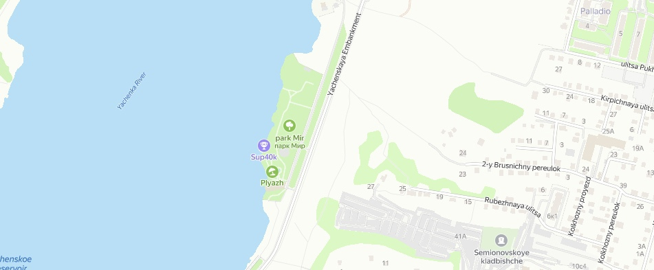

Upcoming events
Sabotage
Venue: Kaluga, Yachenskaya Embankment, Park Mir
Entrance: 700₽
Restrictions: 18+

Dear friends, From Province feat. Resurrection Community Records is on air. We're throwing a multi-format electronic madness - Sabotage. This night, we invite you to immerse in the atmosphere of electronic underground right on the bank of Yachenskoye Reservoir. Great music, pleasant company, a gorgeous venue, high-quality sound and light equipment - those are the key ingredients of this party.
This night offers diverse genres: Drum&Bass/Breakbeat/BassHouse/Techno and even Hardcore.
Special guest from Minsk - Slayt and the father of the Kaluga base scene Hightech. And also constant representatives of the local bass scene: Undervog, AiMentor, Skart, and Exhausted and plus a secret guest with a hardcore set for the most resilient of you.
About Us
We are a collaboration of DJs united by our passion for music and a desire to ignite the dance floor. Our arsenal boasts a diverse range of genres, from classic house to cutting-edge techno and drum and bass tracks. We're ready to deliver an unforgettable experience and fuel your energy!
Previous Events
This section is pending